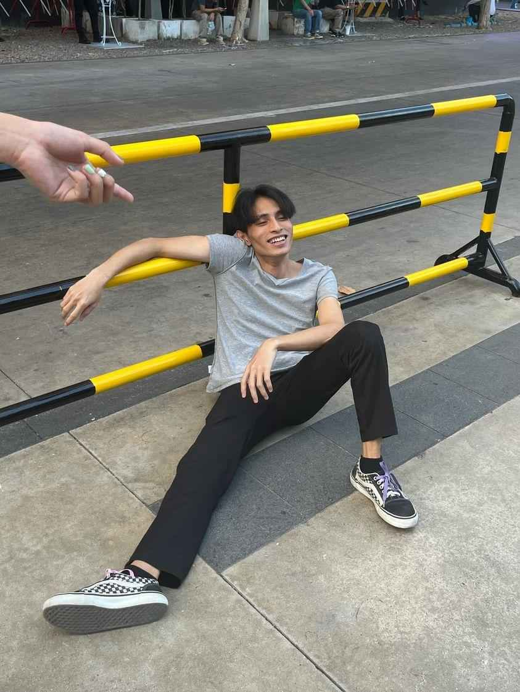

Siam Yim
ในภาพนี้ ผมมาถ่ายรูปเล่นกับเพื่อนๆที่สยาม ผมนั่งอยู่บนพื้นถนนข้างๆ ราวเหล็กกั้นที่มีสีเหลืองสลับดำ ผมนั่งอยู่ในท่าที่ดูผ่อนคลาย ผมมีสีหน้าที่ยิ้มแย้มและดูมีความสุขท่ามกลางบรรยากาศที่ดูเหมือนจะเป็นที่พักผ่อนหรือ ในข้างหลังมีคนกำลังนั่งอยู่ผมและเพื่อนๆอยู่ ถามว่าผมอายไหม อาจารณ์เคยได้ยินคำว่าผู้ชายมักจะทำอะไรที่ตลก ไม่สนว่าตรงนั้นจะมีคนมากมายรึเปล่าครับนั้นละครับที่ผมจะบอก
HOME